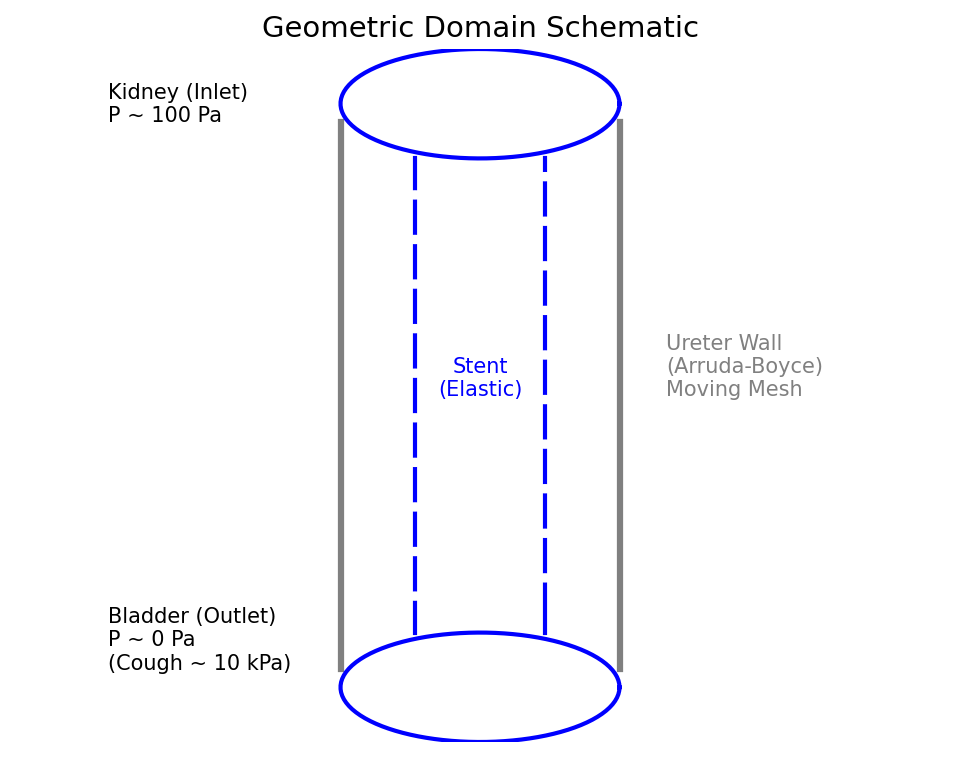

This project is best explained as a chain of engineering evidence.
The workflow map is already encoded in the repository.
Campaign definition
Sample design parameters, lock campaign-level fixed overrides, and emit manifest rows.
CAD export
Generate normalized STEP geometry and sidecars in one pass.
Template solve
Import one design into a fixed-length COMSOL baseline template and solve stationary flow.
Extraction layer
Build COMSOL cut planes and derived values from measurement metadata.
Feature + scalar CSVs
Write a long-form feature table and a one-row-per-snapshot scalar table.
Campaign tables
Collect, summarize, merge, and expose metrics for surrogate training.
The hardened baseline currently starts with two fixed-length campaigns.
What is confirmed
The repo no longer treats stent_length as a continuously sampled variable for the hardened baseline. Instead, it supports separate campaigns such as campaign_len140 and campaign_len220, each generated with a fixed-parameter override.
Presentation treatment
Use a small comparison panel showing the two campaign names, the two length values, and the fact that the rest of the parameter space is sampled within each stratum. This keeps the audience from thinking "every run changes everything at once."
The best supporting visual is not a plot yet. It is a clean manifest excerpt plus one geometry per length.
The manifest row is the first object that already knows the future file paths.
Sample row anatomy
For campaign_len220/design_0000, the batch manifest already carries the design ID, requested counts, CAD path, simulation contract version, and sidecar expectations. That means the pipeline is deterministic before COMSOL ever opens.
design_id = design_0000 stent_length = 220.0 requested_n_prox = 7 requested_n_mid = 3 requested_n_dist = 2 requested_total_hole_count = 18 cad_file = .../campaign_len220/cad/design_0000.step sim_contract_version = v1_deltaP490_steady_laminar domain_template = triple_domain_dumbbell selection_strategy = coordinate_bbox
Why this page matters
It teaches the audience that this is not a GUI-only modeling workflow. A design begins life as a row in a campaign table, and every downstream file is attached to that row. That is the first sign that the project is automation-ready.
The normalized export frame is the backbone of everything that follows.

Current frame contract
According to comsol_normalized_frame_reference.md, the exported stent axis is aligned to global +x, the straight body starts at x = 0, and the body centerline is centered at y = 0, z = 0. The proximal coil is allowed to extend into negative x.
body axis = +X body start = x = 0 body centerline = y = 0, z = 0 proximal coil may extend to x < 0
Use the STEP file as the geometric anchor, even when the browser cannot render STEP directly.
Confirmed files
The sample geometry exists as real STEP files for both lengths:
data/campaigns/campaign_len140/cad/design_0000.step data/campaigns/campaign_len220/cad/design_0000.step
Those files are the actual exports used to build the baseline workflow. They should be treated as the reference solids for any later COMSOL or viewer capture.
Exact presentation shot instruction
If you want a still from the STEP rather than the HTML viewer, the ideal capture is an oblique front-right view with:
Visible: - full straight shaft - proximal coil - distal coil - one-wall side holes readable as notches/openings Hide or mute: - giant coordinate axes - background clutter - measurement overlays for this shot
This page should make it clear that the geometry itself is real and exportable, even if STEP is not a browser-native format.
The live geometry viewer is useful, but it should support the story rather than carry it.
What the viewer is for
The generated viewer is a post-analysis artifact used to check whether exported hole centers, normals, and measurement features make sense relative to the stent mesh. It is strongest as a supporting visual, not as the only geometry evidence.
Important honesty note
The viewer is real, but its current UI affordances are less reliable as presentation anchors than the sidecar content itself. For the deck, use the viewer as an external linked demo and use labeled sidecar excerpts inside the main pages.
The hole sidecar is where the geometry becomes a list of labeled objects.
Confirmed sidecar fields
The hole sidecar contains per-hole labels and geometry descriptors such as:
hole_id region type center_mm radius_mm normal axial_x_mm axial_rank
This is the right page to explain that the project no longer depends on COMSOL or postprocessors guessing where holes are.
First few real labels
coil_prox_000 coil prox x=-5.25085 coil_prox_002 coil prox x=-4.543554 shaft_prox_000 shaft prox x=1.0 shaft_prox_001 shaft prox x=4.600516 coil_prox_001 coil prox x=5.218128 shaft_prox_002 shaft prox x=8.201032 shaft_prox_003 shaft prox x=11.801548 shaft_prox_004 shaft prox x=15.402065
Axial ordering is the bridge from geometry to interpretable plots.
What the ordering enables
Every hole carries an axial_x_mm and an axial_rank. That decision means future charts can treat the stent itself as the x-axis and place hole exchange values at reproducible locations.
Without this field, per-hole flux becomes a bag of values. With it, the same data can become a proximal-to-distal exchange profile.
Presentation use
This is the right page to preview the future per-hole flux plot, even if the actual production chart is still pending COMSOL smoke testing. Show the ordering rule now, then show the eventual plot later when available.
The measurement sidecar is the extraction package that COMSOL reads.
Feature inventory for the current sample
The measurement sidecar is the scientific contract for the COMSOL extraction layer: it tells COMSOL what to measure, where to center the measurements, what sign convention to use, and how features group by zone.
Feature-class counts confirmed from JSON
hole_cap = 18 cross_section = 2 pressure_ref = 2 unroof_patch = 1
The sidecar also carries:
analysis_support.hole_cap_ids_by_zone analysis_support.unroof_patch_ids analysis_support.feature_ids analysis_support.distal_partition_window validation.generator_warnings
Hole-cap features are the key shift from “holes exist” to “holes are measurable.”
Feature naming contract
The measurement sidecar wraps each hole as a named extraction surface with a stable feature ID:
cap_hole_coil_prox_000 cap_hole_coil_prox_002 cap_hole_shaft_prox_000 cap_hole_shaft_prox_001 ... cap_hole_shaft_mid_000 cap_hole_shaft_dist_001
Those labels are much more useful in a talk than unnamed “small disks,” because they show exactly how per-hole geometry becomes per-feature extraction.
Example feature object
{
"feature_id": "cap_hole_coil_prox_000",
"feature_class": "hole_cap",
"zone": "prox",
"geometry_type": "cutplane_disk",
"center_mm": [-5.25085, 3.774922, 4.982901],
"normal": [-0.698317792, 0.331555752, -0.634368225],
"radius_mm": 0.342153,
"parent_feature": "coil_prox_000",
"source_type": "coil"
}The distal lumen, distal annulus, and unroof patch are the most structurally important non-hole features.
Why these features matter
The project is not only measuring hole exchange. It is also trying to separate distal lumen flow from distal annulus flow and to measure exchange through the unroof region. That means the measurement package must define more than just one cap per hole.
sec_distal_lumen sec_distal_annulus patch_unroof_1
The current generator now explicitly places the distal partition plane upstream of the unroof, closing a major ambiguity that existed before.
Current safety window
safe_min_x_mm = 186.806247 safe_max_x_mm = 205.741731 selected_x_mm = 205.741731
This comes directly from the current len220 design_0000.meters.json.
Pressure references are simple, but they tie the new extraction path back to the existing baseline template.
Pressure-ref features
The measurement package includes two named-selection features:
sec_inlet_ref -> selection_tag = inlet sec_outlet_ref -> selection_tag = outlet
That choice is pragmatic. It lets the metadata-driven extraction layer reuse the stable parts of the baseline COMSOL template without pretending every measurement needs to be rebuilt from scratch.
How to explain this
Tell the audience that the pipeline is strict where it needs to be strict and conservative where it makes sense. Hole caps, the unroof patch, and the distal partition are geometry-defined. Inlet and outlet are existing template references, because they are already stable and meaningful.
The COMSOL extraction method consumes the sidecar directly and writes two CSV contracts.
Method inputs and outputs
// METHOD INPUTS measurement_metadata_path design_id // OUTPUTS_flux_scalars.csv _flux_features.csv
The method reads the measurement sidecar, scans the feature list, creates COMSOL datasets and numericals, and writes the extracted values back to disk.
Core expressions
FLOW_EXPR = 6e7*(u*nx+v*ny+w*nz) FLOW_ABS_EXPR = 6e7*abs(u*nx+v*ny+w*nz) VEL_MAG_EXPR = sqrt(u^2+v^2+w^2)
This is the point in the talk where you can explicitly connect the metadata surfaces to signed and absolute volumetric exchange flux.
The first runtime goal is a one-design desktop smoke test, not immediate batch heroics.
Current recommended order
1. Open length-matched baseline .mph copy 2. Enable file-system access in COMSOL 3. Add BuildFluxExtractionLayer method 4. Create Method Call node 5. Supply measurement_metadata_path and design_id 6. Solve baseline model 7. Run Method Call 8. Inspect CP_flux_* and DV_flux_* 9. Confirm flux CSVs were written
Why this page belongs in the presentation
It signals that the project is engineering-hardened rather than magical. There is a deliberate validation ladder: one design first, then a small repeatability check, then campaign-scale automation.
The scalar output table is where physics becomes a concise design summary.
Core scalar families
Q_out_ml_min deltaP_Pa conductance_ml_min_per_Pa Q_lumen_out_ml_min Q_annulus_out_ml_min frac_lumen_out frac_annulus_out Q_holes_net_ml_min Q_holes_abs_ml_min Q_unroof_net_ml_min Q_unroof_abs_ml_min exchange_number hole_only_exchange_number net_direction_index
These are the design-level quantities that let the project talk about throughput, resistance, pathway partition, and total exchange in one table.
Why this is presentation-worthy
This is the moment to show that the pipeline is not just capturing pretty fields. It is compressing the solved flow into a coherent set of physically interpretable metrics that can be compared across designs.
The feature CSV preserves the high-resolution truth that the scalar table necessarily compresses.
Feature-level structure
The long-form feature output is where one row corresponds to one measurement feature. That means hole caps, unroof patches, and partition sections can all coexist in one table.
design_id feature_id feature_class zone signed_flux_ml_min abs_flux_ml_min active_flag p_ramp ...
This table is the real bridge from geometry labels to later per-feature science plots.
What is still missing visually
The next presentation-quality artifact should be a real chart built from design_0000_flux_features.csv after the smoke test: absolute flux vs axial position, color-coded by zone or feature class.
Postprocessing is a controlled promotion from feature truth to training-ready columns.
Collection path
design_XXXX_flux_scalars.csv design_XXXX_flux_features.csv -> collect_flux_extraction_results.py -> campaign_flux_summary.csv -> campaign_flux_features.csv -> merge_tier1_run_results.py -> results.csv
This is where per-design outputs become campaign-wide tables, and where Tier-1 metrics are merged back into the training results set.
Current merge hardening
The merge script now fails loudly on duplicate design IDs, only merges a Tier-1 whitelist, and avoids wiping existing values when incoming rows are partial. That makes the postprocessing path a lot safer for pilot runs.
The optimization loop exists, but it should be introduced as the outer loop around the baseline evidence chain.
Confirmed by code
run_optimization_campaign.py already frames an active learning process: train the surrogate, suggest new candidates, generate CAD, and prepare more COMSOL work. The repo also documents primary optimization metrics such as DeltaP, Q_out, exchange number, normalized centroid, and normalized IQS.
How to present it well
Do not make this the opening chapter. Let the audience first trust the baseline extraction path, then show that the surrogate loop consumes those validated outputs rather than replacing them.
Asset manifest for the detailed version of the talk.
| Asset | Path | Use | Confidence |
|---|---|---|---|
| Geometry schematic | docs/images/geometry_schematic.png | Early geometry orientation | High |
| 220 mm STEP | data/campaigns/campaign_len220/cad/design_0000.step | Main sample geometry | High |
| 220 mm hole sidecar | data/campaigns/campaign_len220/cad/design_0000.holes.json | Hole labels and normals | High |
| 220 mm measurement sidecar | data/campaigns/campaign_len220/cad/design_0000.meters.json | Extraction contract | High |
| 220 mm viewer | data/campaigns/campaign_len220/cad/viewer/design_0000_all_holes_viewer.html | External live demo | High |
| Batch manifest | data/campaigns/campaign_len220/batch_0000.csv | Campaign stage proof | High |
| COMSOL method source | src/comsol/java/BuildFluxExtractionLayer.java.txt | Extraction logic proof | High |
| Test flux summary | data/campaigns/campaign_test/campaign_flux_summary.csv | Summary table shape | Medium |
| Test merged results | data/campaigns/campaign_test/results.csv | Training-table shape | Medium |
Precise missing-asset shot list for the strongest final version.
This HTML is now a full long-form build scaffold, not just a note dump.
What changed in this expanded version
The deck now explicitly uses the sample STEP files, the actual hole and feature labels from design_0000, the normalized frame reference, the current smoke-test and batch runbook logic, and a much longer page-by-page explanation of the baseline path.
It is no longer trying to compress the story into a short executive summary. It is closer to a thesis walkthrough or technical defense appendix.
Next best upgrade
After your first real COMSOL smoke test, the single highest-value improvement is to drop in:
1. one COMSOL tree screenshot 2. one real feature-level flux plot 3. one merged Tier-1 results comparison